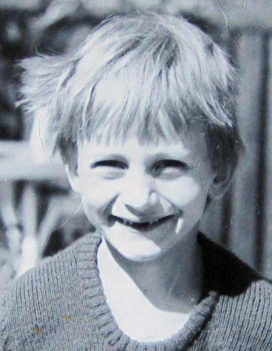
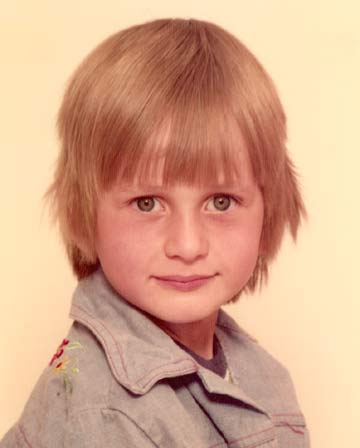
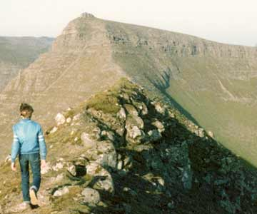
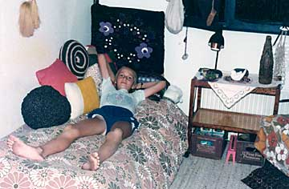
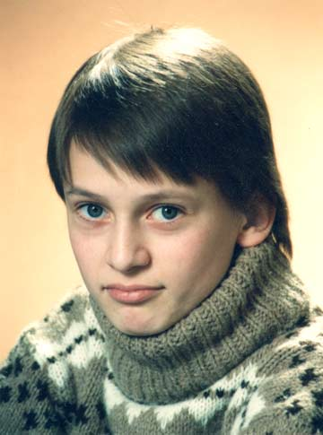
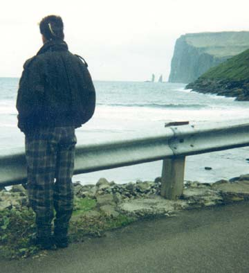
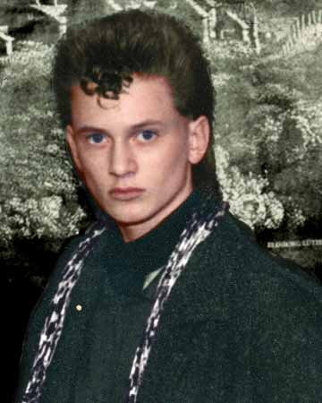
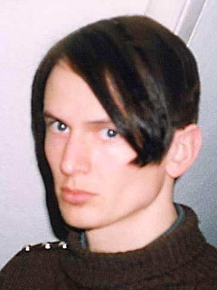
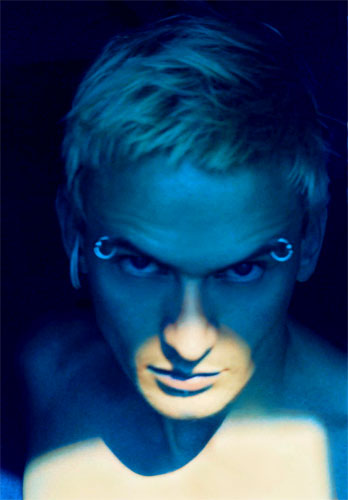

Selvbiografi. |

Robin 4 år.

Robin 6 år.
| Som lille hed jeg Robin. Jeg er vokset op på Færøerne i bygden Vestmanna (1500 indbyggere) med min mamma. Jeg var en nervøs dreng, som helt fra lille af, led af angst. Jeg skabte en hemmelig person inden i sig selv, som jeg kaldte Dennis Agerblad, som kun jeg selv kendte til. Jeg følte at Dennis Agerblad var kroppens rigtige person, som forstod sig selv. Robin var det navn mine forældre har givet mig, fordi min far, som jeg sjældent så, blev kaldt Robin Hood som lille. |

Robin på fjeltoppen.
| Jeg følte aldrig at der var nogen der forstod mig, eller var som mig og prøvede ihærdigt at opføre mig som man skulle for at blive accepteret og elsket. |

Mit værelse.
| Men det gad min indre Dennis Agerblad ikke og så var konflikten født. En konflikt som aldrig skulle løses imellem mine to personer. Min indre Dennis Agerblad blev 180 grader modsat mit ydre Robin. Dennis Agerblad ville vise sig frem og farvede derfor sit hår, syede sit eget tøj, pjattede og begyndte at optage en masse sjove ting på bånd. Men når mit ydre Robin så skulle ud, turde jeg næsten ikke vise mig med det nye hår, som min indre Dennis Agerblad havde lavet på mig. |

Robin 14 år.
| Det var værst da jeg kom i puberteten for det gjorde begge mine personer også. Robin som heteroseksuel og Dennis Agerblad som homoseksuel. Jeg blev bange for at min indre Dennis Agerblad side skulle blive opdaget og gjorde nu endnu mere for at skjule ham, ved at være den første i klassen som kyssede på pigerne. Jeg blev glad hvis nogen kaldte mig for pigeglad eller en skørtejæger. Men to seksualiteter i en krop var meget kompliceret. Især fordi min dominerende Dennis Agerblad side ikke fik levet sin seksualitet ud. Jeg vidste ikke hvad homoseksualitet var, men havde hørt om kønsskifteoperationer i medierne. Og tænkte, øv skal jeg virkelig operere mig om, for at få en mand som vil have mig? |

Dennis Agerblad 15 år. Skoleshow i Vestmanna skole. ca. 1985.

Alene.
| Mine to personer blev mere og mere konflikt fyldte og mit liv blev et mareridt. Og jeg tænkte, hvis bare jeg boede i Danmark så kunne jeg måske få en kønsskifteoperation og kalde mig for Denice. |

Dennis Agerblad 15 år.
| Jeg flyttede til København, men min indre Dennis Agerblad side ville ikke høre tale om min ydre Robin sides idéer om at blive til en pige. Jeg er Dennis Agerblad og ikke andet. Jeg vil ikke sættes i nogen bås. Jeg vil finde et menneske som kan elske mig, som jeg er. Men min indre Dennis Agerblad side var stadig en så ekstrem person for min ydre Robin side, at de to kæmpede om pladsen i kroppen. Til sidst opfant jeg en ny tredje person som var en blanding af de to andre og kaldte mig for Ova. |
| Jeg var glad for at jeg nu kunne glemme alt om min dumme Robin side og hans dobbeltmoral, løgne og selvhad. Robin blev 20 år før han blev lukket og slukket, men ikke glemt. |

Ova 22 år.
| Som Ova klarede jeg mig rigtig godt. Jeg var åben homoseksuel. Jeg fik mig en uddannelse som tekstil designer på Danmarks Design Skole. Startede et færøsk band, som jeg udgav musik med. Startede et kunstnerværksted op og lavede kunst og fik også solgt billeder. Fik fast job som grafiker. Ova blev 10 år. Min Ova side har skabt en del relationer, som intet har med Dennis Agerblad siden at gøre, så han ligger og ulmer under sengen. |

Dennis Agerblad 30 år.
|
I år 2000 tog Dennis Agerblad magten over kroppen. Med tiden og med god hjælp fra performance gruppen dunst, blomstede min Dennis Agerblad side op og ud over scenekanten. Med alle de undelige ekstreme, sjove og søde mennesker følte jeg mig for første gang normal. Jeg er Dennis Agerblad. Forfatter, Komponist, Sanger, Performancekunstner, Videokunstner, Textildesigner, Grafiker & Kunstmaler. |